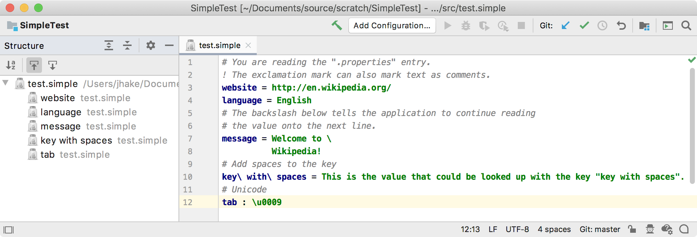

14. Structure View Factory
The structure view in the IntelliJ Platform-based IDE can be customized for a specific file type, including Simple Language. Creating a structure view factory allows showing the structure of any file in a Structure Tool Window for easy navigation between items.
- 14.1. Define a Structure View Factory
- 14.2. Define a Structure View Model
- 14.3. Define a Structure View Element
- 14.4. Register the Structure View Factory
- 14.5. Run the Project
14.1. Define a Structure View Factory
The structure view factory implements PsiStructureViewFactory.
The getStructureViewBuilder() implementation reuses the IntelliJ Platform class TreeBasedStructureViewBuilder.
At this point the project will not compile until SimpleStructureViewModel is implemented below.
// Copyright 2000-2020 JetBrains s.r.o. and other contributors. Use of this source code is governed by the Apache 2.0 license that can be found in the LICENSE file.
package org.intellij.sdk.language;
import com.intellij.ide.structureView.StructureViewBuilder;
import com.intellij.ide.structureView.StructureViewModel;
import com.intellij.ide.structureView.TreeBasedStructureViewBuilder;
import com.intellij.lang.PsiStructureViewFactory;
import com.intellij.openapi.editor.Editor;
import com.intellij.psi.PsiFile;
import org.jetbrains.annotations.NotNull;
import org.jetbrains.annotations.Nullable;
public class SimpleStructureViewFactory implements PsiStructureViewFactory {
@Nullable
@Override
public StructureViewBuilder getStructureViewBuilder(@NotNull final PsiFile psiFile) {
return new TreeBasedStructureViewBuilder() {
@NotNull
@Override
public StructureViewModel createStructureViewModel(@Nullable Editor editor) {
return new SimpleStructureViewModel(psiFile);
}
};
}
}
14.2. Define a Structure View Model
The SimpleStructureViewModel is created by implementing StructureViewModel, which defines the model for data displayed in the standard structure view.
It also extends StructureViewModelBase, an implementation that links the model to a text editor.
// Copyright 2000-2020 JetBrains s.r.o. and other contributors. Use of this source code is governed by the Apache 2.0 license that can be found in the LICENSE file.
package org.intellij.sdk.language;
import com.intellij.ide.structureView.*;
import com.intellij.ide.util.treeView.smartTree.Sorter;
import com.intellij.psi.PsiFile;
import org.intellij.sdk.language.psi.SimpleFile;
import org.jetbrains.annotations.NotNull;
public class SimpleStructureViewModel extends StructureViewModelBase implements
StructureViewModel.ElementInfoProvider {
public SimpleStructureViewModel(PsiFile psiFile) {
super(psiFile, new SimpleStructureViewElement(psiFile));
}
@NotNull
public Sorter[] getSorters() {
return new Sorter[]{Sorter.ALPHA_SORTER};
}
@Override
public boolean isAlwaysShowsPlus(StructureViewTreeElement element) {
return false;
}
@Override
public boolean isAlwaysLeaf(StructureViewTreeElement element) {
return element instanceof SimpleFile;
}
}
14.3. Define a Structure View Element
The SimpleStructureViewElement implements StructureViewTreeElement and SortableTreeElement.
The StructureViewTreeElement represents an element in the Structure View tree model.
The SortableTreeElement represents an item in a smart tree that allows using text other than the presentable text as a key for alphabetic sorting.
// Copyright 2000-2020 JetBrains s.r.o. and other contributors. Use of this source code is governed by the Apache 2.0 license that can be found in the LICENSE file.
package org.intellij.sdk.language;
import com.intellij.ide.projectView.PresentationData;
import com.intellij.ide.structureView.StructureViewTreeElement;
import com.intellij.ide.util.treeView.smartTree.SortableTreeElement;
import com.intellij.ide.util.treeView.smartTree.TreeElement;
import com.intellij.navigation.ItemPresentation;
import com.intellij.psi.NavigatablePsiElement;
import com.intellij.psi.util.PsiTreeUtil;
import org.intellij.sdk.language.psi.SimpleFile;
import org.intellij.sdk.language.psi.SimpleProperty;
import org.intellij.sdk.language.psi.impl.SimplePropertyImpl;
import org.jetbrains.annotations.NotNull;
import java.util.ArrayList;
import java.util.List;
public class SimpleStructureViewElement implements StructureViewTreeElement, SortableTreeElement {
private final NavigatablePsiElement myElement;
public SimpleStructureViewElement(NavigatablePsiElement element) {
this.myElement = element;
}
@Override
public Object getValue() {
return myElement;
}
@Override
public void navigate(boolean requestFocus) {
myElement.navigate(requestFocus);
}
@Override
public boolean canNavigate() {
return myElement.canNavigate();
}
@Override
public boolean canNavigateToSource() {
return myElement.canNavigateToSource();
}
@NotNull
@Override
public String getAlphaSortKey() {
String name = myElement.getName();
return name != null ? name : "";
}
@NotNull
@Override
public ItemPresentation getPresentation() {
ItemPresentation presentation = myElement.getPresentation();
return presentation != null ? presentation : new PresentationData();
}
@NotNull
@Override
public TreeElement[] getChildren() {
if (myElement instanceof SimpleFile) {
List<SimpleProperty> properties = PsiTreeUtil.getChildrenOfTypeAsList(myElement, SimpleProperty.class);
List<TreeElement> treeElements = new ArrayList<>(properties.size());
for (SimpleProperty property : properties) {
treeElements.add(new SimpleStructureViewElement((SimplePropertyImpl) property));
}
return treeElements.toArray(new TreeElement[0]);
}
return EMPTY_ARRAY;
}
}
14.4. Register the Structure View Factory
The SimpleStructureViewFactory implementation is registered with the IntelliJ Platform in the plugin configuration file using the com.intellij.lang.psiStructureViewFactory extension point.
<extensions defaultExtensionNs="com.intellij">
<lang.psiStructureViewFactory language="Simple"
implementationClass="org.intellij.sdk.language.SimpleStructureViewFactory"/>
</extensions>
14.5. Run the Project
Rebuild the project, and run simple_language_plugin in a Development Instance.
Open the test.simple file and choose View | Tool Windows | Structure.
The IDE now supports a structure view of the Simple Language:
